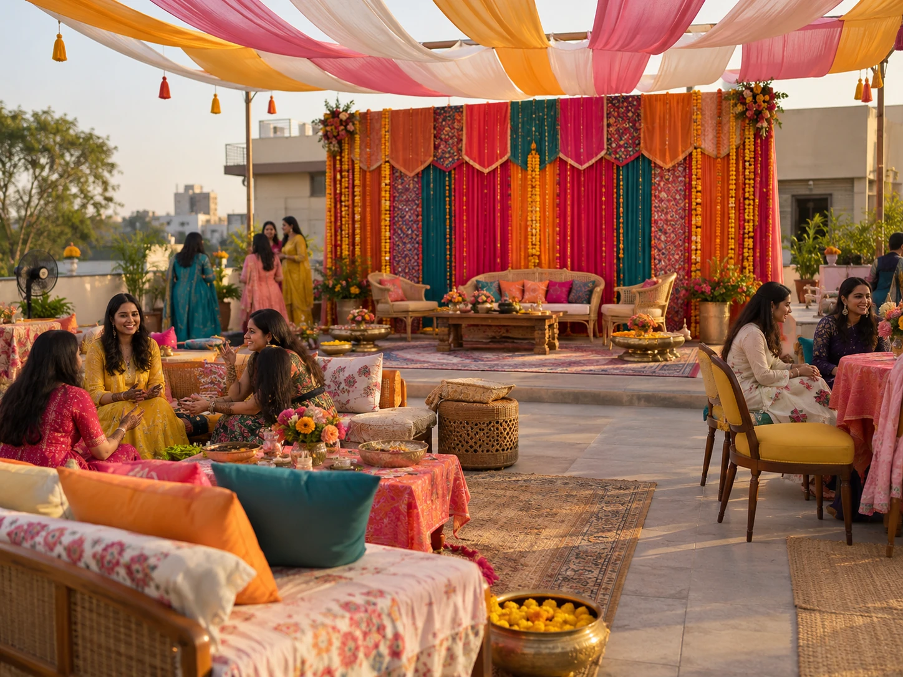

01 / MehendiIllustrative rooftop

A rooftop full of colour
A broad textile backdrop, a flowing fabric canopy, layered rugs and generous lounge seating. Marigolds and patterned fabrics bring the party together.
Rooftop setting and layout are illustrative. The actual rooftop photo and dimensions are still needed.